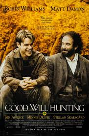

El indomable Will Hunting
Un supergenio en el cuerpo de un rebelde
Will es un joven rebelde con una inteligencia asombrosa, especialmente para las matemáticas. El descubrimiento de su talento por parte de los profesores le planteará un dilema: seguir con su vida de siempre -un trabajo fácil, buenos amigos con los que tomar unas cervezas- o aprovechar sus grandes cualidades intelectuales en alguna universidad. Sólo los consejos de un solitario y bohemio profesor le ayudarán a decidirse.